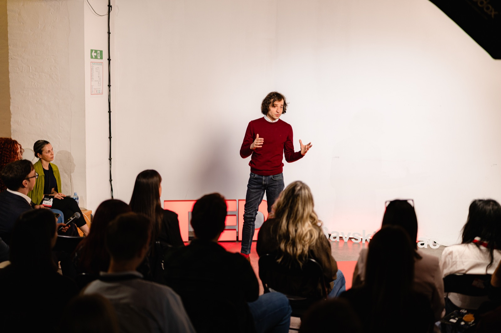

About
Knowledge is my biggest passion, and I'm lucky to run a business built around gaining, creating and sharing it.
My online school, pmclub, has helped more than 30,000 project and product managers sharpen their skills. We teach a minimalist approach to management, and in April 2026 my wife and I put it into a book, Keep It Simple! Project Management with P3.express (RU). It has already sold 3,000 print copies.
In October 2026 I spoke at TEDxSavski Venac with the talk “Project management: keep it simple”.
Get in touch if you'd like to talk about the book or invite me onto a podcast or a stage.
Outside work, I'm learning Esperanto and playing chess. I write by hand whenever I can, love doodling and read plenty of fiction. I live in Belgrade with my wife, Valeria, who is also my business partner and co-author, and our three cats. The cats do nothing all day, but they're cute, and I love them too.
- Book
- Co-author, Keep It Simple! Project Management with P3.express (RU), Bombora, 2026
- Company
- Co-founder, pmclub, since 2015
- Method
- Accredited P3.express trainer; Russian translator of micro.P3.express
Show 4 moreShow less
- Standards
- Reviewer of the PMBOK Guide, 7th and 8th editions
- Community
- President, PMI Moscow Chapter, 2016–2019
- Education
- Ph.D. in Economics; guest lecturer at HSE University
- Certified
- PMP, PRINCE2 Foundation, P3.express Practitioner
Book
Keep It Simple! Project Management with P3.express RU
P3.express is a minimalist project management method: 33 steps from the first idea to the finished result. The book walks through every step with examples from the authors' own projects and from business history. It also shows how to set up project management in teams that resist PMBOK and Scrum.
A book that makes project management accessible to everyone.
Inga Skers, CEO and co-founder, Weeek A practical guide to bringing order to projects without drowning in terminology, bureaucracy or heavy methodology.
Roman Murazanov, CEO, Kaiten P3.express is a tool for bringing order to complex work. For us it became the framework that turned the chaos of change into a clear path to the goal.
Rustam Aynetdinov, CEO, Skyeng
Endorsements translated from Russian.
Read it in Russian: Litres · Amazon · Yandex Books · Eksmo
Rights
English and all translation rights are available directly from the authors. Publishers and literary agents, please email about rights. The idea behind the book in 10 minutes: my TEDx talk.


TEDx talk
Project management: keep it simple
Project management is not a privilege and not a cult. It is a skill everyone needs, like reading. In this talk I explain why, and walk through the P3.express method in three minutes.
“Project management is not a privilege, and project management is not a cult. Project management is a skill.”
Read the transcriptHide the transcript
Are you afraid of aging? I am. To be honest, it's my biggest fear. I'm just 39, and I'm already taking pills. Last month, I had two moles removed from my back. The biopsy showed one of them was turning into cancer. And way too fast.
What's next? Glasses? Sure. Gray hair? Absolutely. A walking stick? Most likely I will carry a walking stick — I had knee issues as a kid. A walking stick, glasses, gray hair — I will be a classic gentleman, right?
Unfortunately, this is not how aging works. You lose muscles. Your bones become fragile. You can't jump high, you can't run high, you can't see well, you can't hear well. Your immune system weakens. You become vulnerable. At some point, another seasonal flu might be the end of you.
But that's not the worst part. Your mind, your brain — it fails you too. Your memories fade. One day you look at your loved one, and you don't recognize them.
Aging hurts.
Good news: scientists all over the world are working really hard on longevity issues, and some of them say they're pretty close. They say they can postpone aging significantly and give us decades of happy, healthy life. They just need time. Some ten more years. I can wait ten more years — that definitely works for me. But my mom... she's 78 now. You see, the clock is ticking. Those scientists — they'd better hurry.
Bad news: they won't be on time. They never are.
But don't blame scientists. It's not just them. Do you know Sagrada Família? That big, beautiful church in Barcelona, Catalonia. They started building it in 1882. Still not finished. Can you imagine?
But what about you? How many of your projects — I mean any projects you were involved with — went ahead of schedule and under the budget? Let's be honest. Let's be honest: we don't manage projects well.
But how come? Don't we have all those project management guides and standards, certifications and associations? Yes, we do. And I've been a part of this. For more than 15 years I've been managing projects, lecturing project management, leading a project management community and contributing to one of the most popular project management standards. So now I have to admit it: we've been working so hard on developing project management profession that accidentally we created a cult.
Jokes aside, we have everything now. We have titles and guilds. We have artifacts and rituals. We have spell books and runes. We do have runes, can you believe it? How else can you call all those acronyms: CV and EV, SPI and CPI, EVM and BRM, RACI and DACI? It's exhausting.
And the paperwork, the paperwork! All those plans and reports, charts and boards. Do you think project managers enjoy filling them in? Trust me, they don't.
But it's not project managers who suffer most. It's all of us. A baker trying to open a pastry shop in your neighborhood. A freelancer who never met a deadline. That lovely couple next door organizing their wedding. And yes, those scientists working on our cure, too. What we have now is a small, privileged group who manage projects and who know how to do it, and a vast majority of us who also manage projects but have no clue how to do it right.
Which reminds me of literacy. Can you read? Of course you can. Most likely, 100 years ago you couldn't. Yet another hundred years back, only one in ten people could read. The scribes could, the priests, the aristocracy, the bourgeois. All the rest? Back off, peasants! Today it sounds both outrageous and ridiculous, and I believe the same is right for project management.
Project management is not a privilege, and project management is not a cult. Project management is a skill — a skill essential for all of us. But to make it accessible, we need a different approach. We need an approach easy to learn and easy to use.
I found that approach. It is called P3.express method.
P3.express is minimalist, which means the manual is so thin you can actually read it in one go. P3.express is open source and free. It is available under a Creative Commons license — you can do anything you want with it. And it is available in more than 30 languages: Ukrainian and Slovak, Chinese and Arabic. And all the translations are done by volunteers, just like you and me. For example, I translated it into Russian, and my friend Faith Alfred is translating it into Yoruba at the moment.
And P3.express is universal. I've seen it applied in banks and NGOs, in construction and tech companies. But most importantly, P3.express is simple and straightforward.
Have you played Lego? As a kid I loved Lego, really. You open that big box, and it is full of tiny pieces and just one thin manual. You follow the manual, you try not to step on the pieces, and voilà — your beautiful spaceship is ready. Mine was Star Wars. That's exactly what we need for project management.
And now I will explain to you how P3.express works in a nutshell. Normally it takes more time — I wrote a whole book about it — but this time it will take only three minutes. Let's go!
First, you gather a team to see if you really need that project. You know what? Most likely you don't. I'm sorry to break it to you, but most of your projects simply drain resources and never bring anything back. P3.express makes sure that you cut the waste out and focus on the precious few that you really need.
And if that project is the one, you move on, executing it in cycles. You know what cycles are, exactly. You wake up in the morning, you go to bed at night — they call it a day, a daily cycle. You go to work on Monday, and you go for a weekend on Friday — they call it a week, a weekly cycle. Cycles are great. You never need to decide when to brush your teeth. Just do it in the morning, do it in the evening, and you'll be just fine.
By the way, while I was rehearsing, my wife Lera told me now they recommend brushing teeth after every single meal. Can you believe that?
Anyway, P3.express has cycles. We have monthly cycles to refine the plans, weekly cycles to review the progress, and daily cycles to manage risks.
And when everything is ready and you come to project closure, P3.express suggests a set of steps to make everything right: to properly close the project, to hand over the product to the customer after double-checking everything. You know, that's it. Now, "that's it," I could tell you, but P3.express insists on going the extra mile. You keep measuring project benefits and looking for opportunities to maximize them.
For example, at this point the scientists — if... honestly, I prefer saying when — the scientists, when they save us from that misery of aging, well, they might go for the Nobel Prize at least, right?
And now that's it — that was P3.express, introduced to you in just three minutes. So now it is your move. You can either enjoy this privilege all on your own, or you can spread the word about P3.express. Share these ideas and make this world a better place.
Thank you so much.
Talks
Keynotes, in-house talks and workshops. In English or Russian, in person or online.
Topics: simple project management with P3.express, the Nearly Universal Principles of Projects (NUPP), team dynamics and cognitive biases. See me on stage in my TEDx talk.
Selected stages
- 2026TEDxSavski Venac, BelgradeProject management: keep it simple
- 2026School 21, SamarkandNUPP: 6 principles for careers and projects
- 2026New Zeon, BakuLaunching P3.express in an IT team
- 2025Agile: Scale & Innovation, TashkentManaging projects with P3.express
- 2024CodeTalks, AlmatyWhat to do with hornets in the team? RU
- 2024IT Summer Fest, SerbiaDealing with Team Hornets
- 2023PMI Germany ChapterBlinded by Bias
- 2022P3.express webinar, Spain5 key takeaways from P3.express implementation
- 2021TeamLead Conf, MoscowHow to keep leadership in a team RU
Show 2 moreShow less
- 2020TeamLead Conf, MoscowHow to bring order to projects with P3.express RU
- 2018CodeFestAgile and Waterfall: bridges, not walls RU
Ventures
Co-founder · since 2015
pmclub
An online school for practising project and product managers. More than 30,000 students and teams from over 300 companies.
Accredited trainer
P3.express
An open, minimalist project management method with an international certification run by certN, an independent exam institute in Belgium.
Media
- Podcast · Life & IT Project ManagementDon't Overcomplicate Project Management: Simplify for Success!
- Video · AppfireWhat are the Nearly Universal Principles of Projects (NUPP)?
- Video · AppfireWhat is P3.express, and how can it help me manage projects more effectively?
- Podcast · Unspoken Dots with Ehsan TarighatEpisode 1: Dmitrii Ilenkov
Show 9 moreShow less
- Webinar · ProjectManagement.comTen Ways to Beat Parkinson's Law
- Video podcast · Code of Leadership RUDon't overcomplicate: project management with Dmitrii Ilenkov
- Video podcast · IT Connect RUIs it worth writing a book in the age of AI?
- Video podcast · ITCAST #64 RUI wrote a book about project management
- Video podcast · Lawread RUCopyright doesn't work that way: a writer versus a lawyer
- Video podcast · PRODVIZHENTSY RUWhy a personal brand matters, and how it connects to success
- Video podcast · Egor Maramygin RUHow to build an effective business: pmclub, project and product management
- Article · Habr RUA chapter from Keep It Simple!
- Article · RBC Pro RUThe path of simplification: how the project manager's job is changing